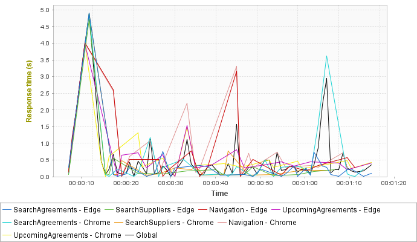
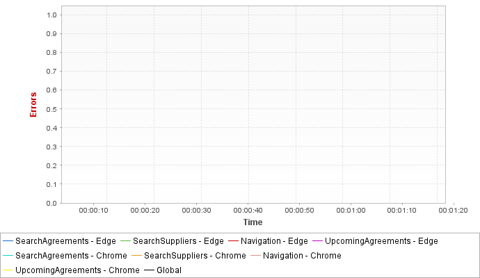

Populations
Graphs


Statistics
| Population | Total requests | Average requests/s | Avg. Page res. time | Error rate |
|---|---|---|---|---|
| SearchAgreements - Edge | 93 (18.7%) | 1.2 | 0.397s (-43.53%) | 0% ( - %) |
| SearchSuppliers - Edge | 62 (12.4%) | 0.8 | 0.705s (+0.284%) | 0% ( - %) |
| Navigation - Edge | 53 (10.64%) | 0.7 | 0.922s (+31.2%) | 0% ( - %) |
| UpcomingAgreements - Edge | 42 (8.43%) | 0.5 | 0.81s (+15.2%) | 0% ( - %) |
| SearchAgreements - Chrome | 91 (18.3%) | 1.2 | 0.517s (-26.46%) | 0% ( - %) |
| SearchSuppliers - Chrome | 62 (12.4%) | 0.8 | 0.727s (+3.41%) | 0% ( - %) |
| Navigation - Chrome | 53 (10.64%) | 0.7 | 1.11s (+58%) | 0% ( - %) |
| UpcomingAgreements - Chrome | 42 (8.43%) | 0.5 | 0.829s (+17.9%) | 0% ( - %) |
| Global | 498 (100%) | 6.4 | 0.703s | 0% |